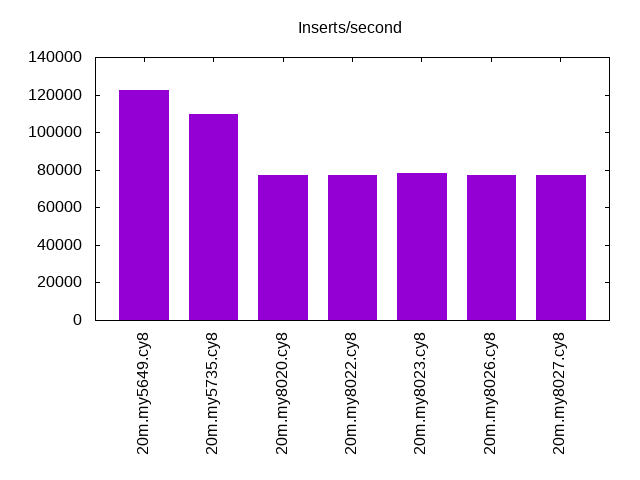
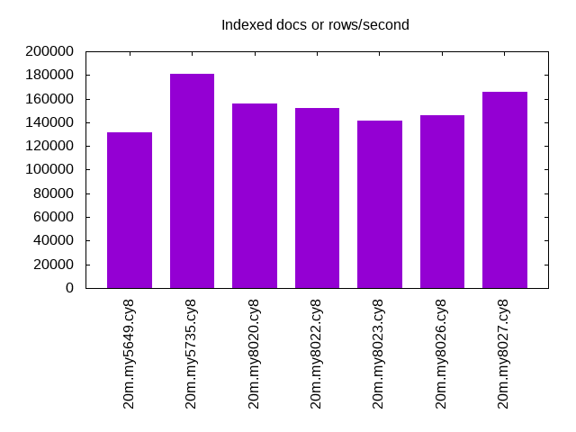
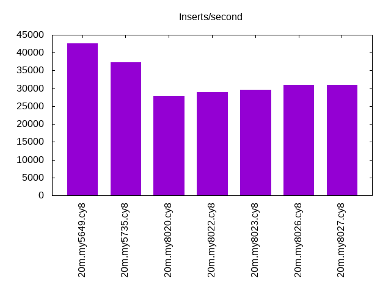
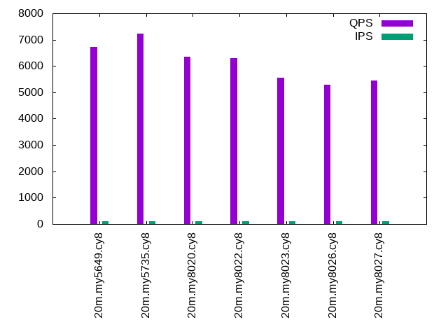
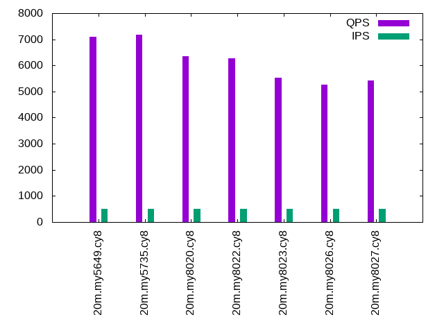
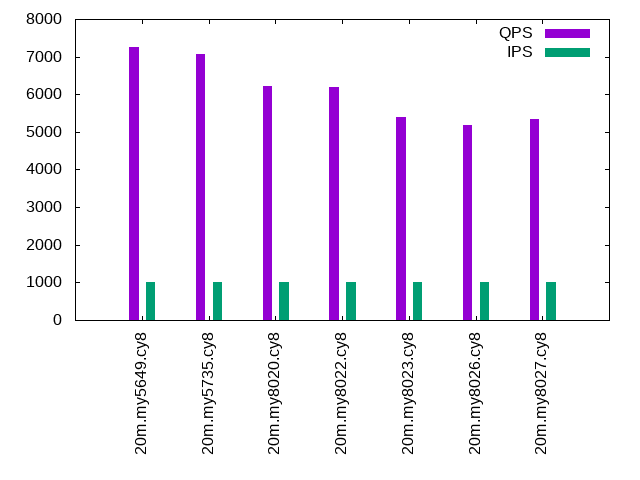

This is a report for the insert benchmark with 20M docs and 1 client(s). It is generated by scripts (bash, awk, sed) and Tufte might not be impressed. An overview of the insert benchmark is here and a short update is here. Below, by DBMS, I mean DBMS+version.config. An example is my8020.c10b40 where my means MySQL, 8020 is version 8.0.20 and c10b40 is the name for the configuration file.
The test server is an Intel NUC with 4 cores, 16G RAM and a Samsung 970 EVO. More details are here. Clients and the DBMS share one server. The per-database configs are in the per-database subdirectories here.
The tested DBMS are:
The numbers are inserts/s for l.i0 and l.i1, indexed docs (or rows) /s for l.x and queries/s for q*.2. The values are the average rate over the entire test for inserts (IPS) and queries (QPS). The range of values for IPS and QPS is split into 3 parts: bottom 25%, middle 50%, top 25%. Values in the bottom 25% have a red background, values in the top 25% have a green background and values in the middle have no color. A gray background is used for values that can be ignored because the DBMS did not sustain the target insert rate. Red backgrounds are not used when the minimum value is within 80% of the max value.
| dbms | l.i0 | l.x | l.i1 | q100.1 | q500.1 | q1000.1 |
|---|---|---|---|---|---|---|
| 20m.my5649.cy8 | 122699 | 131372 | 42553 | 6737 | 7109 | 7249 |
| 20m.my5735.cy8 | 109890 | 181081 | 37383 | 7224 | 7188 | 7057 |
| 20m.my8020.cy8 | 77220 | 155814 | 27816 | 6352 | 6342 | 6228 |
| 20m.my8022.cy8 | 77220 | 152273 | 28944 | 6304 | 6263 | 6198 |
| 20m.my8023.cy8 | 78125 | 141549 | 29586 | 5564 | 5528 | 5396 |
| 20m.my8026.cy8 | 77220 | 145652 | 30960 | 5287 | 5263 | 5196 |
| 20m.my8027.cy8 | 76923 | 166116 | 30912 | 5437 | 5433 | 5340 |
This lists the average rate of inserts/s for the tests that do inserts concurrent with queries. For such tests the query rate is listed in the table above. The read+write tests are setup so that the insert rate should match the target rate every second. Cells that are not at least 95% of the target have a red background to indicate a failure to satisfy the target.
| dbms | q100.1 | q500.1 | q1000.1 |
|---|---|---|---|
| my5649.cy8 | 100 | 500 | 999 |
| my5735.cy8 | 100 | 499 | 999 |
| my8020.cy8 | 100 | 499 | 999 |
| my8022.cy8 | 100 | 499 | 999 |
| my8023.cy8 | 100 | 500 | 999 |
| my8026.cy8 | 100 | 499 | 999 |
| my8027.cy8 | 100 | 500 | 999 |
| target | 100 | 500 | 1000 |
l.i0: load without secondary indexes. Graphs for performance per 1-second interval are here.
Average throughput:
Insert response time histogram: each cell has the percentage of responses that take <= the time in the header and max is the max response time in seconds. For the max column values in the top 25% of the range have a red background and in the bottom 25% of the range have a green background. The red background is not used when the min value is within 80% of the max value.
| dbms | 256us | 1ms | 4ms | 16ms | 64ms | 256ms | 1s | 4s | 16s | gt | max |
|---|---|---|---|---|---|---|---|---|---|---|---|
| my5649.cy8 | 98.919 | 0.991 | 0.085 | 0.001 | 0.003 | 0.098 | |||||
| my5735.cy8 | 98.534 | 1.188 | 0.274 | 0.001 | 0.003 | 0.100 | |||||
| my8020.cy8 | 99.572 | 0.390 | 0.037 | 0.001 | 0.103 | ||||||
| my8022.cy8 | 99.697 | 0.223 | 0.079 | 0.001 | 0.108 | ||||||
| my8023.cy8 | 99.712 | 0.222 | 0.066 | 0.001 | 0.085 | ||||||
| my8026.cy8 | 99.682 | 0.284 | 0.034 | 0.054 | |||||||
| my8027.cy8 | 99.686 | 0.278 | 0.036 | 0.045 |
Performance metrics for the DBMS listed above. Some are normalized by throughput, others are not. Legend for results is here.
ips qps rps rmbps wps wmbps rpq rkbpq wpi wkbpi csps cpups cspq cpupq dbgb1 dbgb2 rss maxop p50 p99 tag 122699 0 1085 4.2 54.6 28.2 0.009 0.035 0.000 0.236 14134 46.3 0.115 15 1.3 41.8 2.1 0.098 124563 108419 20m.my5649.cy8 109890 0 0 0.0 154.3 27.8 0.000 0.000 0.001 0.259 11196 45.9 0.102 17 1.3 42.0 2.4 0.100 110478 94272 20m.my5735.cy8 77220 0 0 0.0 110.5 20.3 0.000 0.000 0.001 0.269 18969 39.9 0.246 21 1.3 41.9 2.6 0.103 77456 68336 20m.my8020.cy8 77220 0 0 0.0 113.0 20.2 0.000 0.000 0.001 0.268 8038 40.8 0.104 21 1.3 41.9 2.6 0.108 77614 68724 20m.my8022.cy8 78125 0 0 0.0 125.7 20.7 0.000 0.000 0.002 0.271 8226 41.1 0.105 21 1.3 41.9 2.6 0.085 78716 72221 20m.my8023.cy8 77220 0 0 0.0 114.0 20.5 0.000 0.000 0.001 0.272 8077 41.0 0.105 21 1.3 41.9 2.6 0.054 77814 72622 20m.my8026.cy8 76923 0 0 0.0 111.2 20.4 0.000 0.000 0.001 0.271 8046 41.1 0.105 21 1.3 41.9 2.6 0.045 77515 70822 20m.my8027.cy8
l.x: create secondary indexes.
Average throughput:
Performance metrics for the DBMS listed above. Some are normalized by throughput, others are not. Legend for results is here.
ips qps rps rmbps wps wmbps rpq rkbpq wpi wkbpi csps cpups cspq cpupq dbgb1 dbgb2 rss maxop p50 p99 tag 131372 0 168 57.8 974.3 119.5 0.001 0.451 0.007 0.932 3164 23.7 0.024 7 2.7 43.2 3.5 0.003 NA NA 20m.my5649.cy8 181081 0 143 54.9 2042.5 159.2 0.001 0.311 0.011 0.900 11104 25.0 0.061 6 3.0 43.6 3.9 0.009 NA NA 20m.my5735.cy8 155814 0 0 0.0 1320.9 124.9 0.000 0.000 0.008 0.821 8957 24.8 0.057 6 3.0 43.5 3.1 0.017 NA NA 20m.my8020.cy8 152273 0 0 0.0 1469.7 122.8 0.000 0.000 0.010 0.826 7920 24.5 0.052 6 3.0 43.5 3.1 0.017 NA NA 20m.my8022.cy8 141549 0 0 0.0 1429.7 115.2 0.000 0.000 0.010 0.833 7434 23.8 0.053 7 3.0 43.5 3.1 0.013 NA NA 20m.my8023.cy8 145652 0 0 0.0 1371.9 117.9 0.000 0.000 0.009 0.829 7516 24.2 0.052 7 3.0 43.5 3.2 0.021 NA NA 20m.my8026.cy8 166116 0 982 67.0 3288.4 172.9 0.006 0.413 0.020 1.066 19127 68.5 0.115 16 3.0 43.5 4.0 0.009 NA NA 20m.my8027.cy8
l.i1: continue load after secondary indexes created. Graphs for performance per 1-second interval are here.
Average throughput:
Insert response time histogram: each cell has the percentage of responses that take <= the time in the header and max is the max response time in seconds. For the max column values in the top 25% of the range have a red background and in the bottom 25% of the range have a green background. The red background is not used when the min value is within 80% of the max value.
| dbms | 256us | 1ms | 4ms | 16ms | 64ms | 256ms | 1s | 4s | 16s | gt | max |
|---|---|---|---|---|---|---|---|---|---|---|---|
| my5649.cy8 | 6.321 | 93.253 | 0.421 | 0.005 | 0.001 | 0.133 | |||||
| my5735.cy8 | 99.233 | 0.726 | 0.040 | nonzero | 0.070 | ||||||
| my8020.cy8 | 99.147 | 0.699 | 0.110 | 0.044 | 0.115 | ||||||
| my8022.cy8 | 99.334 | 0.444 | 0.187 | 0.035 | 0.112 | ||||||
| my8023.cy8 | 99.338 | 0.462 | 0.195 | 0.004 | 0.095 | ||||||
| my8026.cy8 | 99.367 | 0.500 | 0.133 | 0.001 | 0.073 | ||||||
| my8027.cy8 | 99.360 | 0.513 | 0.126 | 0.001 | 0.080 |
Performance metrics for the DBMS listed above. Some are normalized by throughput, others are not. Legend for results is here.
ips qps rps rmbps wps wmbps rpq rkbpq wpi wkbpi csps cpups cspq cpupq dbgb1 dbgb2 rss maxop p50 p99 tag 42553 0 745 2.9 88.4 26.9 0.018 0.070 0.002 0.647 9837 34.1 0.231 32 7.9 48.4 7.9 0.133 43869 6543 20m.my5649.cy8 37383 0 0 0.0 727.0 42.3 0.000 0.000 0.019 1.159 9579 34.1 0.256 36 7.9 48.5 8.3 0.070 38822 4045 20m.my5735.cy8 27816 0 129 2.0 143.1 19.3 0.005 0.074 0.005 0.710 14257 33.2 0.513 48 7.9 48.4 8.5 0.115 29618 599 20m.my8020.cy8 28944 0 134 2.1 145.9 20.0 0.005 0.074 0.005 0.707 6767 32.4 0.234 45 7.9 48.4 8.5 0.112 30816 649 20m.my8022.cy8 29586 0 136 2.1 156.0 20.6 0.005 0.074 0.005 0.714 6750 32.6 0.228 44 7.9 48.4 8.5 0.095 31215 1099 20m.my8023.cy8 30960 0 143 2.2 152.9 21.4 0.005 0.074 0.005 0.709 7036 33.5 0.227 43 7.9 48.4 8.5 0.073 32464 1149 20m.my8026.cy8 30912 0 143 2.2 151.1 21.5 0.005 0.074 0.005 0.711 7024 33.4 0.227 43 7.9 48.4 8.5 0.080 32414 1199 20m.my8027.cy8
q100.1: range queries with 100 insert/s per client. Graphs for performance per 1-second interval are here.
Average throughput:
Query response time histogram: each cell has the percentage of responses that take <= the time in the header and max is the max response time in seconds. For max values in the top 25% of the range have a red background and in the bottom 25% of the range have a green background. The red background is not used when the min value is within 80% of the max value.
| dbms | 256us | 1ms | 4ms | 16ms | 64ms | 256ms | 1s | 4s | 16s | gt | max |
|---|---|---|---|---|---|---|---|---|---|---|---|
| my5649.cy8 | 90.205 | 9.791 | 0.001 | 0.002 | nonzero | 0.018 | |||||
| my5735.cy8 | 99.888 | 0.111 | nonzero | nonzero | nonzero | 0.021 | |||||
| my8020.cy8 | 99.328 | 0.671 | nonzero | nonzero | nonzero | 0.020 | |||||
| my8022.cy8 | 99.502 | 0.498 | nonzero | nonzero | nonzero | 0.025 | |||||
| my8023.cy8 | 98.586 | 1.414 | nonzero | nonzero | nonzero | 0.024 | |||||
| my8026.cy8 | 97.844 | 2.156 | nonzero | nonzero | nonzero | 0.021 | |||||
| my8027.cy8 | 98.250 | 1.749 | nonzero | nonzero | nonzero | 0.020 |
Insert response time histogram: each cell has the percentage of responses that take <= the time in the header and max is the max response time in seconds. For max values in the top 25% of the range have a red background and in the bottom 25% of the range have a green background. The red background is not used when the min value is within 80% of the max value.
| dbms | 256us | 1ms | 4ms | 16ms | 64ms | 256ms | 1s | 4s | 16s | gt | max |
|---|---|---|---|---|---|---|---|---|---|---|---|
| my5649.cy8 | 0.021 | 53.694 | 39.125 | 7.160 | 0.020 | ||||||
| my5735.cy8 | 99.271 | 0.500 | 0.229 | 0.027 | |||||||
| my8020.cy8 | 98.896 | 0.965 | 0.139 | 0.025 | |||||||
| my8022.cy8 | 99.285 | 0.458 | 0.257 | 0.028 | |||||||
| my8023.cy8 | 99.181 | 0.688 | 0.132 | 0.028 | |||||||
| my8026.cy8 | 99.222 | 0.681 | 0.097 | 0.024 | |||||||
| my8027.cy8 | 99.208 | 0.646 | 0.146 | 0.025 |
Performance metrics for the DBMS listed above. Some are normalized by throughput, others are not. Legend for results is here.
ips qps rps rmbps wps wmbps rpq rkbpq wpi wkbpi csps cpups cspq cpupq dbgb1 dbgb2 rss maxop p50 p99 tag 100 6737 2 0.0 6.8 0.2 0.000 0.001 0.068 2.405 25918 25.8 3.847 153 8.2 48.7 8.2 0.018 8284 2621 20m.my5649.cy8 100 7224 0 0.0 16.1 0.5 0.000 0.000 0.161 4.797 27806 27.2 3.849 151 8.2 48.9 8.6 0.021 7224 7128 20m.my5735.cy8 100 6352 0 0.0 46.1 1.1 0.000 0.000 0.462 11.552 25152 29.2 3.960 184 8.2 48.8 8.8 0.020 6361 6188 20m.my8020.cy8 100 6304 0 0.0 45.1 1.1 0.000 0.000 0.452 11.603 24360 26.9 3.864 171 8.2 48.8 8.8 0.025 6313 6185 20m.my8022.cy8 100 5564 0 0.0 56.4 1.3 0.000 0.000 0.564 13.206 21583 26.6 3.879 191 8.2 48.8 8.8 0.024 5562 5434 20m.my8023.cy8 100 5287 0 0.0 56.2 1.3 0.000 0.000 0.564 13.202 20522 26.5 3.882 200 8.2 48.8 8.8 0.021 5290 5178 20m.my8026.cy8 100 5437 0 0.0 56.4 1.3 0.000 0.000 0.565 13.233 21103 26.7 3.881 196 8.2 48.8 8.8 0.020 5434 5322 20m.my8027.cy8
q500.1: range queries with 500 insert/s per client. Graphs for performance per 1-second interval are here.
Average throughput:
Query response time histogram: each cell has the percentage of responses that take <= the time in the header and max is the max response time in seconds. For max values in the top 25% of the range have a red background and in the bottom 25% of the range have a green background. The red background is not used when the min value is within 80% of the max value.
| dbms | 256us | 1ms | 4ms | 16ms | 64ms | 256ms | 1s | 4s | 16s | gt | max |
|---|---|---|---|---|---|---|---|---|---|---|---|
| my5649.cy8 | 93.039 | 6.956 | 0.003 | 0.002 | nonzero | 0.017 | |||||
| my5735.cy8 | 99.791 | 0.207 | 0.002 | nonzero | nonzero | 0.025 | |||||
| my8020.cy8 | 99.270 | 0.728 | 0.001 | nonzero | nonzero | 0.026 | |||||
| my8022.cy8 | 99.311 | 0.687 | 0.002 | nonzero | nonzero | 0.027 | |||||
| my8023.cy8 | 98.274 | 1.724 | 0.002 | nonzero | nonzero | 0.025 | |||||
| my8026.cy8 | 97.505 | 2.493 | 0.002 | nonzero | nonzero | 0.020 | |||||
| my8027.cy8 | 98.005 | 1.992 | 0.002 | nonzero | nonzero | 0.023 |
Insert response time histogram: each cell has the percentage of responses that take <= the time in the header and max is the max response time in seconds. For max values in the top 25% of the range have a red background and in the bottom 25% of the range have a green background. The red background is not used when the min value is within 80% of the max value.
| dbms | 256us | 1ms | 4ms | 16ms | 64ms | 256ms | 1s | 4s | 16s | gt | max |
|---|---|---|---|---|---|---|---|---|---|---|---|
| my5649.cy8 | 0.296 | 90.168 | 9.031 | 0.506 | 0.021 | ||||||
| my5735.cy8 | 99.686 | 0.215 | 0.099 | 0.028 | |||||||
| my8020.cy8 | 99.025 | 0.899 | 0.076 | 0.030 | |||||||
| my8022.cy8 | 99.644 | 0.249 | 0.107 | 0.029 | |||||||
| my8023.cy8 | 99.618 | 0.314 | 0.068 | 0.028 | |||||||
| my8026.cy8 | 99.622 | 0.326 | 0.051 | 0.028 | |||||||
| my8027.cy8 | 99.643 | 0.308 | 0.049 | 0.042 |
Performance metrics for the DBMS listed above. Some are normalized by throughput, others are not. Legend for results is here.
ips qps rps rmbps wps wmbps rpq rkbpq wpi wkbpi csps cpups cspq cpupq dbgb1 dbgb2 rss maxop p50 p99 tag 500 7109 9 0.0 3.8 0.3 0.001 0.005 0.008 0.655 27391 26.3 3.853 148 9.0 49.5 8.9 0.017 8295 2893 20m.my5649.cy8 499 7188 0 0.0 11.6 0.5 0.000 0.000 0.023 1.015 27724 27.7 3.857 154 9.0 49.6 9.3 0.025 7192 7051 20m.my5735.cy8 499 6342 0 0.0 7.1 0.4 0.000 0.000 0.014 0.747 25163 29.2 3.967 184 9.0 49.5 9.5 0.026 6345 6185 20m.my8020.cy8 499 6263 0 0.0 7.0 0.4 0.000 0.000 0.014 0.752 24184 27.3 3.861 174 9.0 49.5 9.5 0.027 6265 6121 20m.my8022.cy8 500 5528 0 0.0 20.1 0.5 0.000 0.000 0.040 1.105 21404 26.9 3.872 195 9.0 49.5 9.5 0.025 5530 5402 20m.my8023.cy8 499 5263 0 0.0 19.9 0.5 0.000 0.000 0.040 1.105 20395 27.0 3.875 205 9.0 49.6 9.5 0.020 5261 5146 20m.my8026.cy8 500 5433 0 0.0 20.0 0.5 0.000 0.000 0.040 1.105 21042 27.1 3.873 200 9.0 49.5 9.5 0.023 5434 5322 20m.my8027.cy8
q1000.1: range queries with 1000 insert/s per client. Graphs for performance per 1-second interval are here.
Average throughput:
Query response time histogram: each cell has the percentage of responses that take <= the time in the header and max is the max response time in seconds. For max values in the top 25% of the range have a red background and in the bottom 25% of the range have a green background. The red background is not used when the min value is within 80% of the max value.
| dbms | 256us | 1ms | 4ms | 16ms | 64ms | 256ms | 1s | 4s | 16s | gt | max |
|---|---|---|---|---|---|---|---|---|---|---|---|
| my5649.cy8 | 94.589 | 5.403 | 0.006 | 0.002 | nonzero | 0.019 | |||||
| my5735.cy8 | 99.577 | 0.418 | 0.005 | nonzero | nonzero | 0.023 | |||||
| my8020.cy8 | 99.021 | 0.977 | 0.002 | nonzero | nonzero | 0.022 | |||||
| my8022.cy8 | 98.943 | 1.051 | 0.005 | nonzero | nonzero | 0.027 | |||||
| my8023.cy8 | 97.400 | 2.594 | 0.006 | nonzero | nonzero | 0.027 | |||||
| my8026.cy8 | 96.870 | 3.124 | 0.006 | nonzero | nonzero | 0.020 | |||||
| my8027.cy8 | 97.332 | 2.661 | 0.006 | nonzero | nonzero | 0.023 |
Insert response time histogram: each cell has the percentage of responses that take <= the time in the header and max is the max response time in seconds. For max values in the top 25% of the range have a red background and in the bottom 25% of the range have a green background. The red background is not used when the min value is within 80% of the max value.
| dbms | 256us | 1ms | 4ms | 16ms | 64ms | 256ms | 1s | 4s | 16s | gt | max |
|---|---|---|---|---|---|---|---|---|---|---|---|
| my5649.cy8 | 0.253 | 94.840 | 4.748 | 0.159 | 0.021 | ||||||
| my5735.cy8 | 99.739 | 0.210 | 0.051 | 0.027 | |||||||
| my8020.cy8 | 98.571 | 1.352 | 0.077 | 0.027 | |||||||
| my8022.cy8 | 99.685 | 0.244 | 0.070 | 0.039 | |||||||
| my8023.cy8 | 99.698 | 0.252 | 0.050 | 0.034 | |||||||
| my8026.cy8 | 99.703 | 0.262 | 0.035 | 0.042 | |||||||
| my8027.cy8 | 99.710 | 0.253 | 0.037 | 0.039 |
Performance metrics for the DBMS listed above. Some are normalized by throughput, others are not. Legend for results is here.
ips qps rps rmbps wps wmbps rpq rkbpq wpi wkbpi csps cpups cspq cpupq dbgb1 dbgb2 rss maxop p50 p99 tag 999 7249 18 0.1 4.1 0.5 0.002 0.010 0.004 0.530 28028 26.9 3.867 148 10.1 50.6 9.9 0.019 8167 2956 20m.my5649.cy8 999 7057 0 0.0 30.2 1.1 0.000 0.000 0.030 1.154 27356 28.0 3.876 159 10.1 50.8 10.3 0.023 7064 6872 20m.my5735.cy8 999 6228 0 0.0 27.6 1.0 0.000 0.000 0.028 0.991 25093 29.8 4.029 191 10.1 50.7 10.5 0.022 6233 6061 20m.my8020.cy8 999 6198 0 0.0 23.7 0.9 0.000 0.000 0.024 0.969 24049 27.8 3.880 179 10.1 50.6 10.5 0.027 6201 6028 20m.my8022.cy8 999 5396 0 0.0 20.8 0.8 0.000 0.000 0.021 0.775 20992 27.3 3.890 202 10.1 50.7 10.5 0.027 5402 5244 20m.my8023.cy8 999 5196 0 0.0 20.5 0.7 0.000 0.000 0.020 0.765 20234 27.2 3.894 209 10.1 50.7 10.5 0.020 5195 5066 20m.my8026.cy8 999 5340 0 0.0 20.4 0.7 0.000 0.000 0.020 0.763 20773 27.4 3.890 205 10.1 50.7 10.5 0.023 5338 5196 20m.my8027.cy8
l.i0: load without secondary indexes
Performance metrics for all DBMS, not just the ones listed above. Some are normalized by throughput, others are not. Legend for results is here.
ips qps rps rmbps wps wmbps rpq rkbpq wpi wkbpi csps cpups cspq cpupq dbgb1 dbgb2 rss maxop p50 p99 tag 122699 0 1085 4.2 54.6 28.2 0.009 0.035 0.000 0.236 14134 46.3 0.115 15 1.3 41.8 2.1 0.098 124563 108419 20m.my5649.cy8 109890 0 0 0.0 154.3 27.8 0.000 0.000 0.001 0.259 11196 45.9 0.102 17 1.3 42.0 2.4 0.100 110478 94272 20m.my5735.cy8 77220 0 0 0.0 110.5 20.3 0.000 0.000 0.001 0.269 18969 39.9 0.246 21 1.3 41.9 2.6 0.103 77456 68336 20m.my8020.cy8 77220 0 0 0.0 113.0 20.2 0.000 0.000 0.001 0.268 8038 40.8 0.104 21 1.3 41.9 2.6 0.108 77614 68724 20m.my8022.cy8 78125 0 0 0.0 125.7 20.7 0.000 0.000 0.002 0.271 8226 41.1 0.105 21 1.3 41.9 2.6 0.085 78716 72221 20m.my8023.cy8 77220 0 0 0.0 114.0 20.5 0.000 0.000 0.001 0.272 8077 41.0 0.105 21 1.3 41.9 2.6 0.054 77814 72622 20m.my8026.cy8 76923 0 0 0.0 111.2 20.4 0.000 0.000 0.001 0.271 8046 41.1 0.105 21 1.3 41.9 2.6 0.045 77515 70822 20m.my8027.cy8
l.x: create secondary indexes
Performance metrics for all DBMS, not just the ones listed above. Some are normalized by throughput, others are not. Legend for results is here.
ips qps rps rmbps wps wmbps rpq rkbpq wpi wkbpi csps cpups cspq cpupq dbgb1 dbgb2 rss maxop p50 p99 tag 131372 0 168 57.8 974.3 119.5 0.001 0.451 0.007 0.932 3164 23.7 0.024 7 2.7 43.2 3.5 0.003 NA NA 20m.my5649.cy8 181081 0 143 54.9 2042.5 159.2 0.001 0.311 0.011 0.900 11104 25.0 0.061 6 3.0 43.6 3.9 0.009 NA NA 20m.my5735.cy8 155814 0 0 0.0 1320.9 124.9 0.000 0.000 0.008 0.821 8957 24.8 0.057 6 3.0 43.5 3.1 0.017 NA NA 20m.my8020.cy8 152273 0 0 0.0 1469.7 122.8 0.000 0.000 0.010 0.826 7920 24.5 0.052 6 3.0 43.5 3.1 0.017 NA NA 20m.my8022.cy8 141549 0 0 0.0 1429.7 115.2 0.000 0.000 0.010 0.833 7434 23.8 0.053 7 3.0 43.5 3.1 0.013 NA NA 20m.my8023.cy8 145652 0 0 0.0 1371.9 117.9 0.000 0.000 0.009 0.829 7516 24.2 0.052 7 3.0 43.5 3.2 0.021 NA NA 20m.my8026.cy8 166116 0 982 67.0 3288.4 172.9 0.006 0.413 0.020 1.066 19127 68.5 0.115 16 3.0 43.5 4.0 0.009 NA NA 20m.my8027.cy8
l.i1: continue load after secondary indexes created
Performance metrics for all DBMS, not just the ones listed above. Some are normalized by throughput, others are not. Legend for results is here.
ips qps rps rmbps wps wmbps rpq rkbpq wpi wkbpi csps cpups cspq cpupq dbgb1 dbgb2 rss maxop p50 p99 tag 42553 0 745 2.9 88.4 26.9 0.018 0.070 0.002 0.647 9837 34.1 0.231 32 7.9 48.4 7.9 0.133 43869 6543 20m.my5649.cy8 37383 0 0 0.0 727.0 42.3 0.000 0.000 0.019 1.159 9579 34.1 0.256 36 7.9 48.5 8.3 0.070 38822 4045 20m.my5735.cy8 27816 0 129 2.0 143.1 19.3 0.005 0.074 0.005 0.710 14257 33.2 0.513 48 7.9 48.4 8.5 0.115 29618 599 20m.my8020.cy8 28944 0 134 2.1 145.9 20.0 0.005 0.074 0.005 0.707 6767 32.4 0.234 45 7.9 48.4 8.5 0.112 30816 649 20m.my8022.cy8 29586 0 136 2.1 156.0 20.6 0.005 0.074 0.005 0.714 6750 32.6 0.228 44 7.9 48.4 8.5 0.095 31215 1099 20m.my8023.cy8 30960 0 143 2.2 152.9 21.4 0.005 0.074 0.005 0.709 7036 33.5 0.227 43 7.9 48.4 8.5 0.073 32464 1149 20m.my8026.cy8 30912 0 143 2.2 151.1 21.5 0.005 0.074 0.005 0.711 7024 33.4 0.227 43 7.9 48.4 8.5 0.080 32414 1199 20m.my8027.cy8
q100.1: range queries with 100 insert/s per client
Performance metrics for all DBMS, not just the ones listed above. Some are normalized by throughput, others are not. Legend for results is here.
ips qps rps rmbps wps wmbps rpq rkbpq wpi wkbpi csps cpups cspq cpupq dbgb1 dbgb2 rss maxop p50 p99 tag 100 6737 2 0.0 6.8 0.2 0.000 0.001 0.068 2.405 25918 25.8 3.847 153 8.2 48.7 8.2 0.018 8284 2621 20m.my5649.cy8 100 7224 0 0.0 16.1 0.5 0.000 0.000 0.161 4.797 27806 27.2 3.849 151 8.2 48.9 8.6 0.021 7224 7128 20m.my5735.cy8 100 6352 0 0.0 46.1 1.1 0.000 0.000 0.462 11.552 25152 29.2 3.960 184 8.2 48.8 8.8 0.020 6361 6188 20m.my8020.cy8 100 6304 0 0.0 45.1 1.1 0.000 0.000 0.452 11.603 24360 26.9 3.864 171 8.2 48.8 8.8 0.025 6313 6185 20m.my8022.cy8 100 5564 0 0.0 56.4 1.3 0.000 0.000 0.564 13.206 21583 26.6 3.879 191 8.2 48.8 8.8 0.024 5562 5434 20m.my8023.cy8 100 5287 0 0.0 56.2 1.3 0.000 0.000 0.564 13.202 20522 26.5 3.882 200 8.2 48.8 8.8 0.021 5290 5178 20m.my8026.cy8 100 5437 0 0.0 56.4 1.3 0.000 0.000 0.565 13.233 21103 26.7 3.881 196 8.2 48.8 8.8 0.020 5434 5322 20m.my8027.cy8
q500.1: range queries with 500 insert/s per client
Performance metrics for all DBMS, not just the ones listed above. Some are normalized by throughput, others are not. Legend for results is here.
ips qps rps rmbps wps wmbps rpq rkbpq wpi wkbpi csps cpups cspq cpupq dbgb1 dbgb2 rss maxop p50 p99 tag 500 7109 9 0.0 3.8 0.3 0.001 0.005 0.008 0.655 27391 26.3 3.853 148 9.0 49.5 8.9 0.017 8295 2893 20m.my5649.cy8 499 7188 0 0.0 11.6 0.5 0.000 0.000 0.023 1.015 27724 27.7 3.857 154 9.0 49.6 9.3 0.025 7192 7051 20m.my5735.cy8 499 6342 0 0.0 7.1 0.4 0.000 0.000 0.014 0.747 25163 29.2 3.967 184 9.0 49.5 9.5 0.026 6345 6185 20m.my8020.cy8 499 6263 0 0.0 7.0 0.4 0.000 0.000 0.014 0.752 24184 27.3 3.861 174 9.0 49.5 9.5 0.027 6265 6121 20m.my8022.cy8 500 5528 0 0.0 20.1 0.5 0.000 0.000 0.040 1.105 21404 26.9 3.872 195 9.0 49.5 9.5 0.025 5530 5402 20m.my8023.cy8 499 5263 0 0.0 19.9 0.5 0.000 0.000 0.040 1.105 20395 27.0 3.875 205 9.0 49.6 9.5 0.020 5261 5146 20m.my8026.cy8 500 5433 0 0.0 20.0 0.5 0.000 0.000 0.040 1.105 21042 27.1 3.873 200 9.0 49.5 9.5 0.023 5434 5322 20m.my8027.cy8
q1000.1: range queries with 1000 insert/s per client
Performance metrics for all DBMS, not just the ones listed above. Some are normalized by throughput, others are not. Legend for results is here.
ips qps rps rmbps wps wmbps rpq rkbpq wpi wkbpi csps cpups cspq cpupq dbgb1 dbgb2 rss maxop p50 p99 tag 999 7249 18 0.1 4.1 0.5 0.002 0.010 0.004 0.530 28028 26.9 3.867 148 10.1 50.6 9.9 0.019 8167 2956 20m.my5649.cy8 999 7057 0 0.0 30.2 1.1 0.000 0.000 0.030 1.154 27356 28.0 3.876 159 10.1 50.8 10.3 0.023 7064 6872 20m.my5735.cy8 999 6228 0 0.0 27.6 1.0 0.000 0.000 0.028 0.991 25093 29.8 4.029 191 10.1 50.7 10.5 0.022 6233 6061 20m.my8020.cy8 999 6198 0 0.0 23.7 0.9 0.000 0.000 0.024 0.969 24049 27.8 3.880 179 10.1 50.6 10.5 0.027 6201 6028 20m.my8022.cy8 999 5396 0 0.0 20.8 0.8 0.000 0.000 0.021 0.775 20992 27.3 3.890 202 10.1 50.7 10.5 0.027 5402 5244 20m.my8023.cy8 999 5196 0 0.0 20.5 0.7 0.000 0.000 0.020 0.765 20234 27.2 3.894 209 10.1 50.7 10.5 0.020 5195 5066 20m.my8026.cy8 999 5340 0 0.0 20.4 0.7 0.000 0.000 0.020 0.763 20773 27.4 3.890 205 10.1 50.7 10.5 0.023 5338 5196 20m.my8027.cy8
Insert response time histogram
256us 1ms 4ms 16ms 64ms 256ms 1s 4s 16s gt max tag 0.000 98.919 0.991 0.085 0.001 0.003 0.000 0.000 0.000 0.000 0.098 my5649.cy8 0.000 98.534 1.188 0.274 0.001 0.003 0.000 0.000 0.000 0.000 0.100 my5735.cy8 0.000 0.000 99.572 0.390 0.037 0.001 0.000 0.000 0.000 0.000 0.103 my8020.cy8 0.000 0.000 99.697 0.223 0.079 0.001 0.000 0.000 0.000 0.000 0.108 my8022.cy8 0.000 0.000 99.712 0.222 0.066 0.001 0.000 0.000 0.000 0.000 0.085 my8023.cy8 0.000 0.000 99.682 0.284 0.034 0.000 0.000 0.000 0.000 0.000 0.054 my8026.cy8 0.000 0.000 99.686 0.278 0.036 0.000 0.000 0.000 0.000 0.000 0.045 my8027.cy8
TODO - determine whether there is data for create index response time
Insert response time histogram
256us 1ms 4ms 16ms 64ms 256ms 1s 4s 16s gt max tag 0.000 6.321 93.253 0.421 0.005 0.001 0.000 0.000 0.000 0.000 0.133 my5649.cy8 0.000 0.000 99.233 0.726 0.040 nonzero 0.000 0.000 0.000 0.000 0.070 my5735.cy8 0.000 0.000 99.147 0.699 0.110 0.044 0.000 0.000 0.000 0.000 0.115 my8020.cy8 0.000 0.000 99.334 0.444 0.187 0.035 0.000 0.000 0.000 0.000 0.112 my8022.cy8 0.000 0.000 99.338 0.462 0.195 0.004 0.000 0.000 0.000 0.000 0.095 my8023.cy8 0.000 0.000 99.367 0.500 0.133 0.001 0.000 0.000 0.000 0.000 0.073 my8026.cy8 0.000 0.000 99.360 0.513 0.126 0.001 0.000 0.000 0.000 0.000 0.080 my8027.cy8
Query response time histogram
256us 1ms 4ms 16ms 64ms 256ms 1s 4s 16s gt max tag 90.205 9.791 0.001 0.002 nonzero 0.000 0.000 0.000 0.000 0.000 0.018 my5649.cy8 99.888 0.111 nonzero nonzero nonzero 0.000 0.000 0.000 0.000 0.000 0.021 my5735.cy8 99.328 0.671 nonzero nonzero nonzero 0.000 0.000 0.000 0.000 0.000 0.020 my8020.cy8 99.502 0.498 nonzero nonzero nonzero 0.000 0.000 0.000 0.000 0.000 0.025 my8022.cy8 98.586 1.414 nonzero nonzero nonzero 0.000 0.000 0.000 0.000 0.000 0.024 my8023.cy8 97.844 2.156 nonzero nonzero nonzero 0.000 0.000 0.000 0.000 0.000 0.021 my8026.cy8 98.250 1.749 nonzero nonzero nonzero 0.000 0.000 0.000 0.000 0.000 0.020 my8027.cy8
Insert response time histogram
256us 1ms 4ms 16ms 64ms 256ms 1s 4s 16s gt max tag 0.000 0.021 53.694 39.125 7.160 0.000 0.000 0.000 0.000 0.000 0.020 my5649.cy8 0.000 0.000 99.271 0.500 0.229 0.000 0.000 0.000 0.000 0.000 0.027 my5735.cy8 0.000 0.000 98.896 0.965 0.139 0.000 0.000 0.000 0.000 0.000 0.025 my8020.cy8 0.000 0.000 99.285 0.458 0.257 0.000 0.000 0.000 0.000 0.000 0.028 my8022.cy8 0.000 0.000 99.181 0.688 0.132 0.000 0.000 0.000 0.000 0.000 0.028 my8023.cy8 0.000 0.000 99.222 0.681 0.097 0.000 0.000 0.000 0.000 0.000 0.024 my8026.cy8 0.000 0.000 99.208 0.646 0.146 0.000 0.000 0.000 0.000 0.000 0.025 my8027.cy8
Query response time histogram
256us 1ms 4ms 16ms 64ms 256ms 1s 4s 16s gt max tag 93.039 6.956 0.003 0.002 nonzero 0.000 0.000 0.000 0.000 0.000 0.017 my5649.cy8 99.791 0.207 0.002 nonzero nonzero 0.000 0.000 0.000 0.000 0.000 0.025 my5735.cy8 99.270 0.728 0.001 nonzero nonzero 0.000 0.000 0.000 0.000 0.000 0.026 my8020.cy8 99.311 0.687 0.002 nonzero nonzero 0.000 0.000 0.000 0.000 0.000 0.027 my8022.cy8 98.274 1.724 0.002 nonzero nonzero 0.000 0.000 0.000 0.000 0.000 0.025 my8023.cy8 97.505 2.493 0.002 nonzero nonzero 0.000 0.000 0.000 0.000 0.000 0.020 my8026.cy8 98.005 1.992 0.002 nonzero nonzero 0.000 0.000 0.000 0.000 0.000 0.023 my8027.cy8
Insert response time histogram
256us 1ms 4ms 16ms 64ms 256ms 1s 4s 16s gt max tag 0.000 0.296 90.168 9.031 0.506 0.000 0.000 0.000 0.000 0.000 0.021 my5649.cy8 0.000 0.000 99.686 0.215 0.099 0.000 0.000 0.000 0.000 0.000 0.028 my5735.cy8 0.000 0.000 99.025 0.899 0.076 0.000 0.000 0.000 0.000 0.000 0.030 my8020.cy8 0.000 0.000 99.644 0.249 0.107 0.000 0.000 0.000 0.000 0.000 0.029 my8022.cy8 0.000 0.000 99.618 0.314 0.068 0.000 0.000 0.000 0.000 0.000 0.028 my8023.cy8 0.000 0.000 99.622 0.326 0.051 0.000 0.000 0.000 0.000 0.000 0.028 my8026.cy8 0.000 0.000 99.643 0.308 0.049 0.000 0.000 0.000 0.000 0.000 0.042 my8027.cy8
Query response time histogram
256us 1ms 4ms 16ms 64ms 256ms 1s 4s 16s gt max tag 94.589 5.403 0.006 0.002 nonzero 0.000 0.000 0.000 0.000 0.000 0.019 my5649.cy8 99.577 0.418 0.005 nonzero nonzero 0.000 0.000 0.000 0.000 0.000 0.023 my5735.cy8 99.021 0.977 0.002 nonzero nonzero 0.000 0.000 0.000 0.000 0.000 0.022 my8020.cy8 98.943 1.051 0.005 nonzero nonzero 0.000 0.000 0.000 0.000 0.000 0.027 my8022.cy8 97.400 2.594 0.006 nonzero nonzero 0.000 0.000 0.000 0.000 0.000 0.027 my8023.cy8 96.870 3.124 0.006 nonzero nonzero 0.000 0.000 0.000 0.000 0.000 0.020 my8026.cy8 97.332 2.661 0.006 nonzero nonzero 0.000 0.000 0.000 0.000 0.000 0.023 my8027.cy8
Insert response time histogram
256us 1ms 4ms 16ms 64ms 256ms 1s 4s 16s gt max tag 0.000 0.253 94.840 4.748 0.159 0.000 0.000 0.000 0.000 0.000 0.021 my5649.cy8 0.000 0.000 99.739 0.210 0.051 0.000 0.000 0.000 0.000 0.000 0.027 my5735.cy8 0.000 0.000 98.571 1.352 0.077 0.000 0.000 0.000 0.000 0.000 0.027 my8020.cy8 0.000 0.000 99.685 0.244 0.070 0.000 0.000 0.000 0.000 0.000 0.039 my8022.cy8 0.000 0.000 99.698 0.252 0.050 0.000 0.000 0.000 0.000 0.000 0.034 my8023.cy8 0.000 0.000 99.703 0.262 0.035 0.000 0.000 0.000 0.000 0.000 0.042 my8026.cy8 0.000 0.000 99.710 0.253 0.037 0.000 0.000 0.000 0.000 0.000 0.039 my8027.cy8